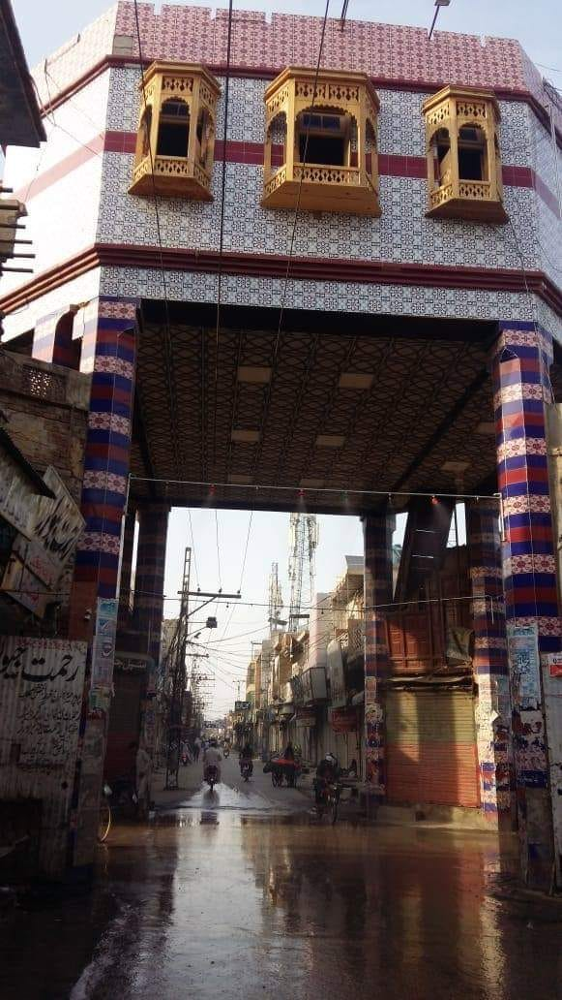
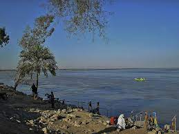
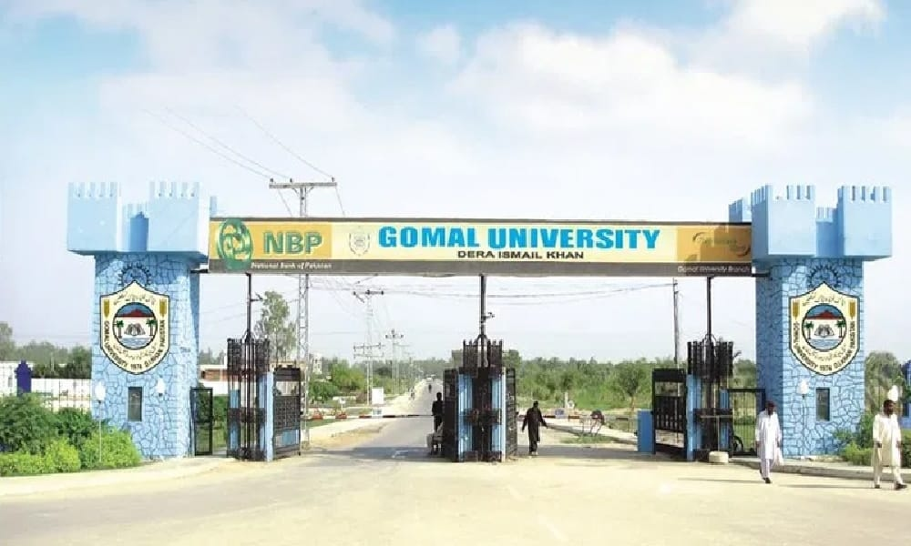

MY CITY DERA ISMAIL KHAN

Dera Ismail Khan (Urdu and Saraiki: ڈیرہ اسماعیل خان), abbreviated as D.I. Khan, is a city and capital of Dera Ismail Khan District, located in Khyber Pakhtunkhwa, Pakistan. It is the 37th largest city of Pakistan and fifth largest in the province of Khyber Pakhtunkhwa by population. Dera Ismail Khan is situated on the west bank of the Indus River, at its junction with the Gomal River. It is 300 kilometres (190 mi) south of the provincial capital Peshawar, and 230 kilometres (140 mi) northwest of Multan, Punjab. D. I. Khan is located in the historical Derajat region, which was established in the 15th century, when Baloch people were invited to settle the region by Shah Husayn, of the Langah Sultanate of Multan. Ismail Khan, is traditionally believed to have founded the city of Dera Ismail Khan
D. I. Khan was ruled by nine generations of Baloch leaders descended directly from Ismail Khan.
The original town was swept away by flooding on the Indus River in 1823. The present city was founded by Nawab Sher Muhammad Khan of the Sadduzai clan in 1825, and now stands four miles (6 km) away from the permanent channel of the river, atop a small plateau.
Architects were brought in from Punjab, who designed a city where Hindus would live south of the city center and Muslims north of it. Four bazaars were laid in each of the cardinal directions, with all four converging in the town's central Chowgalla.
rebuilt city contained a large bazaar for Afghan traders, and the city prospered from trade via the Gomal Pass. An eight-foot mud wall with nine gates was built around the city which is in a circular type shape during this time as well, some of which such as the Kaneran Wala and Sakki survive until today. All existing buildings date from no earlier than the 19th century. Now a road is made around the old city called circular road.

According to the 1901 census, the population of Dera Ismail Khan was 31,737, of whom 18,662 were Muslims, 11,486 Hindus, and 1,420 Sikhs. Of the total, 3,450 lived in the cantonment. In 1911 the population reached 35,131 and in 1921 it became 39,341. In 1932, the population of Dera Ismail Khan was 56,741. It consisted of Hindus and Muslims, the latter of which included recent converts from Hinduism and Pashtuns.The predominantly Muslim population supported the Muslim League and the Pakistan Movement. After the Partition of India and independence of Pakistan in 1947, the minority Hindus and Sikhs migrated to India, while the Muslim migrants from India settled in Dera Ismail Khan.
Kotli Imam Hussain a.s
D. I. Khan was badly affected by a terrorist campaign conducted throughout northwest Pakistan, primarily between 2007 and 2014 by the Tehreek-e-Taliban Pakistan.
Kotli Imam hussain a.s is the old and largest graveyard with an area of 327 kanal area, its a shi'te Holy complex containg a mosque, religous institutes and some shrne resembling to Holy shrines of Imam Hussian a.s, Hazrat Abbas a.s, Imam Ali a.s and Bibi Fatima s.a. And thousands of people are burried here including shias, sunnis and mostly martyrs of terrorism during 2007 to 2014.
River Indus
The Indus (Sanskrit: Sindhu) is a transboundary river of Asia and a trans-Himalayan river of South and Central Asia. The 3,120 km (1,940 mi) river rises in mountain springs northeast of Mount Kailash in Western Tibet, flows northwest through the disputed region of Kashmir,[7] bends sharply to the left after the Nanga Parbat massif, and flows south-by-southwest through Pakistan, before emptying into the Arabian Sea near the port city of Karachi.
The river has a total drainage area of circa 1,120,000 km2 (430,000 sq mi). Its estimated annual flow is around 243 km3 (58 cu mi), making it one of the 50 largest rivers in the world in terms of average annual flow.
Dera Ismail Khan is situated on Indus Bank. There is also an army cant on bank.People use to cme here for relaxing and having boats rides. There are many places and parks where people arrange get to gathers and parties.There are amny park which are managed by Local Government and some parks are also managed privately. People spend their leisure time in fishing. In Summer season students and gents come for taking bath and party.
Gomal University
Gomal University (Urdu: جامعہ گومل), is a public research university located in Dera Ismail Khan in the Khyber-Pakhtunkhwa province of Pakistan. Founded and established in 1974, the university is one of the oldest institutions in the country and occupies one of the largest campuses in the Khyber-Pakhtunkhwa province.
The university was founded by Prime Minister Zulfikar Ali Bhutto, and the donation came from Allah Nawaz Khan, who donated a large area of his land to the establishment of the university. Allah Nawaz Khan was also Gomal University's first vice-chancellor in 1974.Dr. Iftikhar Ahmad is the current vice-chancellor.
Kafir Kot
Kafir Kot or Kafirkot (Urdu: کافرکوٹ) is an ancient Hindu Temple complex in the Dera Ismail Khan District of Khyber Pakhtunkhwa, Pakistan. It consists of the ruins of five temples and a large fort. The Kafir Kot complex in Khyber Pakhtunkhwa is often referred to as the "Northern Kafir Kot" to contrast it with the "Southern Kafir Kot" that is located in the town of Bilot Sharif, approximately 35 kilometres (22 mi) to the south.

The remains of Sindhu Temple (and the nearby ruins of Mari) "are indications of the existence of a Hindu civilization of considerable importance and antiquity" according to a 1915 issue of the District Gazetteer of Mianwali.
Takht-e- Sulaiman a.s
Takht-e-Sulaiman (Pashto: تخت سليمان; "Throne of Solomon") is a peak of the Sulaiman Mountains, located near the town of Darazinda in the Dera Ismail Khan Subdivision of Khyber Pakhtunkhwa, Pakistan. It is close to Dera Ismail Khan Subdivision's borders with both South Waziristan and Zhob, Balochistan. At 3,487 metres (11,440 ft), it is the highest peak in Dera Ismail Khan District and the greater Shirani region. Ibn Battuta named Takht-e-Sulaiman as Kōh-e Sulaymān, "Mount of Solomon".

A legend, recorded by the medieval Maghrebi explorer Ibn Battuta, has it that Prophet Solomon climbed this mountain and looked out over the land of Hindustan, which was then "covered with darkness", after staying on the peak, he turned back without descending into this new frontier, and left only the mountain which is named after him.
Laal Mahrah (ghaznavid graveyard)
Khyber Pakhtunkhwa was part of larger Islamic empires from 963 to 1187, including the Ghaznavid Empire (975-1187) headed by Sultan Mahmud of Ghazni. Mahmud is said to have made seventeen raids into India. At that time, North India was divided into several Hindu states. On the frontier of India, there existed the Hindu Shahi kingdom which extended from Punjab to Kabul.
 Lal Mahra, the site is an important Islamic Architecture site dating back to the 11th and 12th centuries A D. The site consists of eleven monumental tombs and more than 120 graves. But only four tombs and some graves in dilapidated condition were surviving at the time of protection while the rest seven tombs were completely razed to the ground only their traces are visible. The rest four tombs have been preserved and restored only. Presently the site is well preserved and free from encroachment. Tree plantation as a barrier against weather effects as well as to restrict fresh burial (modern and ancient graveyards) has been provided.
Lal Mahra, the site is an important Islamic Architecture site dating back to the 11th and 12th centuries A D. The site consists of eleven monumental tombs and more than 120 graves. But only four tombs and some graves in dilapidated condition were surviving at the time of protection while the rest seven tombs were completely razed to the ground only their traces are visible. The rest four tombs have been preserved and restored only. Presently the site is well preserved and free from encroachment. Tree plantation as a barrier against weather effects as well as to restrict fresh burial (modern and ancient graveyards) has been provided.
This web page is developed by Shanza Hussain for practice of HTML & CSS on 3rd March 2023.